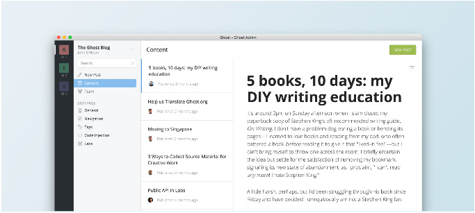
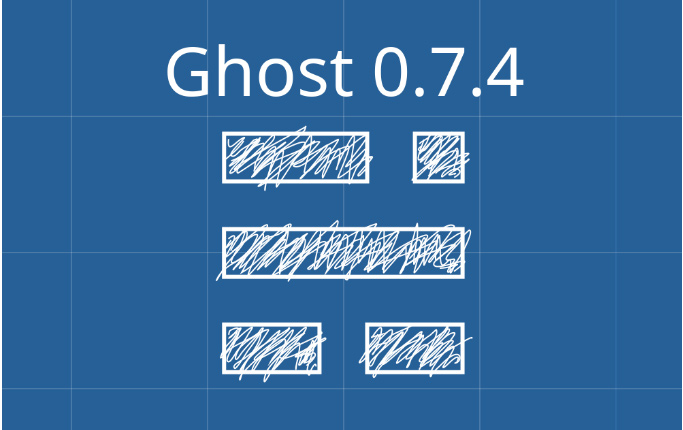

从这周起，我们将 Ghost 推荐 Node.js 版本升级为 Node.js v4 LTS。 我们这样做其实已经落后于计划了。 然而，经过大量测试之后，我们确信 Ghost 可以在 Node.js v4 平台上流畅的运行并且内存消耗比原来也减少了。 目前，Ghost(Pro) 上托
阅读全文
虽然通过浏览器管理 Ghost 博客虽然很方便，但是在多个 tab 之间切换有时候也会很麻烦，嗯， 如果能有一个独立的 app 应该使用起来会更爽一些！ 今天的主角来了，Ghost 桌面版 APP -- Ghost Desktop！ 目前，Ghost Desktop 还处于早期阶段
阅读全文运行 Ghost 必须要安装 Node.js。但是 Ubuntu 或 Debian 的软件仓库中的 Node.js 更新较慢， 甚至只能等到新版本发布才能有最新的 Node.js 用。下面我们说一下从 NodeSource 提供的仓库中安装最新版本的 Node.js。 支持的操作系
阅读全文
紧随 Ghost 官方脚步，Ghost 0.7.4 中文正式版发布了！ 这一版本包含了自 Ghost 0.7.3 版本发布以来所修正的 bug， 主要是针对开放 API 功能的改进。 0.7.1、0.7.2、0.7.3 这些版本哪去了？ 从 Ghost 0.7.0 版本发布以来，Gh
阅读全文Ghost 0.7.0 已经正式发布了！此版本主要对后台 UI 的重构， 既包含重新设计，也包含底层功能的重大改进。0.7.0 还为即将到来的 API 做了很多铺垫工作。 Ghost 0.7.0 的主要改进 [新增] 设计新后台界面 [新增] 后台能够搜索博文和用户 [新增] 安
阅读全文{{ghost_foot}} 助手函数将不再输出 jQuery 链接了。 从 Ghost 第一个版本开始， {{ghost_foot}} 助手函数默认都会输出一个 jQuery 文件链接， 并且这个文件还是本地存储的。最开始 Ghost 团队觉得这是一件对所有主题开发者有意义
阅读全文Ghost 官方在 18 号的会议记录上透露了 Ghost 0.7 版本可能会在这个月底前发布，也就是说 Github 仓库里的代码不会有太大变化了。 周末抽时间把 master 分支上的代码下载、编译、安装起来， 截几张高清图，360 度无死角透视一下最新版的真面目吧！ 安装界面
阅读全文后台界面 首当其冲的就是后台 UI 的改变。 从 Ghost 0.3.0 第一个公开发布的版本至今，Ghost 的后台 UI 一直都很简洁，顶部是一个黑底的导航条， 三四个菜单项，底部是标签输入框，中间全是内容区域。如下图： 但是随着 Ghost 功能越来越完善，越来越多，好多东西
阅读全文Ghost 0.6.3 版本已经正式发布了！此版本主要修复了一些 bug 并包含了几个新特性， 例如：博文预览。 Ghost 0.6.3 的主要变化 [新增] 博文预览 [新增] 带密码保护的私密博客 [新增] 为作者自定义页面模板 [增强] 登陆状态延长至 7 天 [修复] 编辑
阅读全文